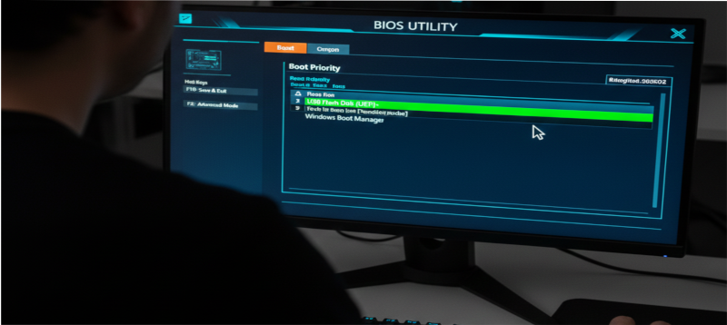
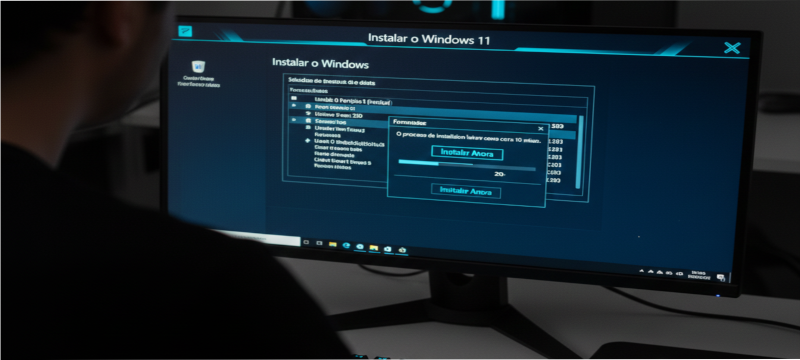
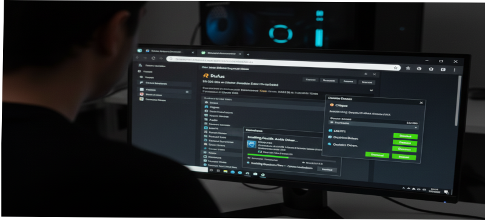
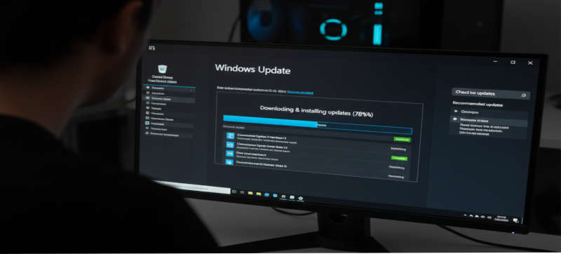
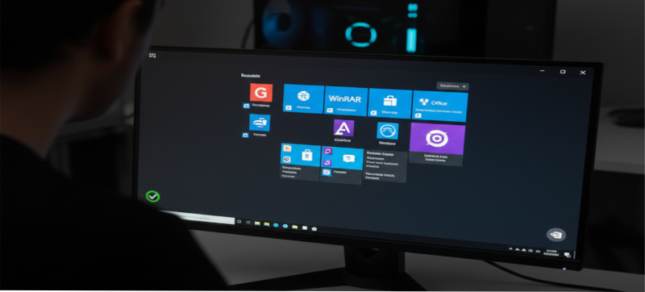
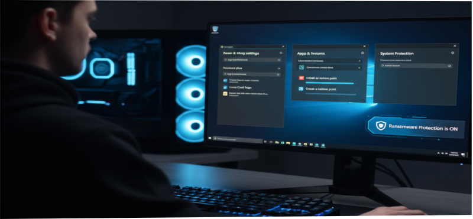

Criando Pendrive Bootável
Baixe a ferramenta Rufus no site oficial da Microsoft.
Insira o pendrive (8GB ou mais) e crie o instalador do Windows 10/11.
Tambem podemos criar um predrive bootável apartir do cmd com os seguntes comamamando
"diskpart"
“list disk”
“select disk (nome do disco)”
“clean”
“create partition primary”
“select parttition 1”
“format fs=ntfs quick” ou “format fs=fat32 quick”
“exit”

Ajuste de Boot na BIOS
Acesse a BIOS com DEL ou F2 e configure o pendrive como primeira opção de boot.
Em sistemas modernos, use o modo UEFI para melhor desempenho.

Instalando o Windows
Escolha a opção Instalar Agora, selecione o SSD para instalação
e formate a partição. O processo leva de 5 a 15 minutos.

Instalação de Drivers
Após instalar o sistema, instale os drivers da placa-mãe:
chipset, áudio, LAN/Wi-Fi e gráficos.
Use o site do fabricante para versões atualizadas.

Windows Update
Utilize o Windows Update para baixar correções,
melhorias de performance e drivers adicionais recomendados pelo sistema.

Programas Essenciais
Instale ferramentas básicas: navegador, leitor de PDF,
WinRAR/7Zip, Office, antivírus e drivers extras de vídeo (NVIDIA/AMD).

Otimização Inicial
Ajuste inicial:
• Ativar modo de alto desempenho
• Desinstalar programas desnecessários
• Configurar restauração do sistema
• Ativar proteção contra ransomware